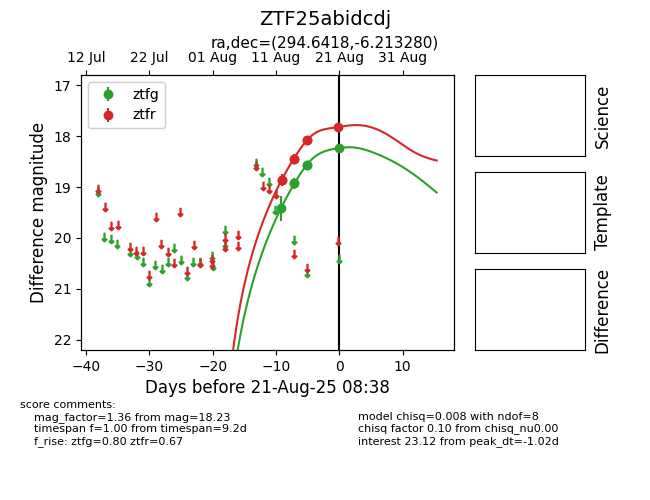

Target ZTF25abidcdj at 2025-08-21 11:20, see:
FINK: fink-portal.org/ZTF25abidcdj
Lasair: lasair-ztf.lsst.ac.uk/objects/ZTF25abidcdj
ALeRCE: alerce.online/object/ZTF25abidcdj
alt names
ZTF25abidcdj (ztf,alerce)
coordinates:
equatorial (ra, dec) = (294.6418,-6.21328)
galactic (l, b) = (32.7105,-13.29788)
photometry
last atlaso=17.66, ztfg=18.23, ztfr=17.82
2 atlaso, 6 ztfg, 7 ztfr detections
